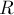
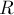

MAXimal
добавлено: 17 Jul 2009 23:00
редактировано: 17 Jul 2009 23:00
Содержание [скрыть]
Рандомизированная куча
Рандомизированная куча (randomized heap) — это куча, которая за счёт применения генератора случайных чисел позволяет выполнять все необходимые операции за логарифмическое ожидаемое время.
Кучей называется бинарное дерево, для любой вершины которого справедливо, что значение в этой вершине меньше либо равно значений во всех её потомках (это куча для минимума; разумеется, симметрично можно определить кучу для максимума). Таким образом, в корне кучи всегда находится минимум.
Стандартный набор операций, определяемый для куч, следующий:
- Добавление элемента
- Нахождение минимума
- Извлечение минимума (удаление его из дерева и возврат его значения)
- Слияние двух куч (возвращается куча, содержащая элементы обеих куч; дубликаты не удаляются)
- Удаление произвольного элемента (при известной позиции в дереве)
Рандомизированная куча позволяет выполнять все эти операции за ожидаемое время  при очень простой реализации.
при очень простой реализации.
Структура данных
Сразу опишем структуру данных, описывающую бинарную кучу:
struct tree { T value; tree * l, * r; };В вершине дерева хранится значение некоторого типа , для которого определён оператор сравнения (). Кроме того, хранятся указатели на левого и правого сыновей (которые равны 0, если соответствующий сын отсутствует).
Выполнение операций
Нетрудно понять, что все операции над кучей сводятся к одной операции: слиянию двух куч в одну. Действительно, добавление элемента в кучу равносильно слиянию этой кучи с кучей, состоящей из единственного добавляемого элемента. Нахождение минимума вообще не требует никаких действий — минимумом просто является корень кучи. Извлечение минимума эквивалентно тому, что куча заменяется результатом слияния левого и правого поддерева корня. Наконец, удаление произвольного элемента аналогично удалению минимума: всё поддерево с корнем в этой вершине заменяется результатом слияния двух поддеревьев-сыновей этой вершины.
Итак, нам фактически надо реализовать только операцию слияния двух куч, все остальные операции тривиально сводятся к этой операции.
Пусть даны две кучи и , требуется вернуть их объединение. Понятно, что в корне каждой из этих куч находятся их минимумы, поэтому в корне результирующей кучи будет находиться минимум из этих двух значений. Итак, мы сравниваем, в корне какой из куч находится меньшее значение, его помещаем в корень результата, а теперь мы должны объединить сыновей выбранной вершины с оставшейся кучей. Если мы по какому-то признаку выберем одного из двух сыновей, то тогда нам надо будет просто объединить поддерево в корне с этим сыном с кучей. Таким образом, мы снова пришли к операции слияния. Рано или поздно этот процесс остановится (на это понадобится, понятно, не более чем сумма высот куч).
Таким образом, чтобы достичь логарифмической асимптотики в среднем, нам надо указать способ выбора одного из двух сыновей с тем, чтобы в среднем длина проходимого пути получалась бы порядка логарифма от количества элементов в куче. Нетрудно догадаться, что производить этот выбор мы будем случайно, таким образом, реализация операции слияния получается такой:
tree * merge (tree * t1, tree * t2) { if (!t1 || !t2) return t1 ? t1 : t2; if (t2->value < t1->value) swap (t1, t2); if (rand() & 1) swap (t1->l, t1->r); t1->l = merge (t1->l, t2); return t1; }
Здесь сначала проверяется, если хотя бы одна из куч пуста, то никаких действий по слиянию производить не надо. Иначе, мы делаем, чтобы куча была кучей с меньшим значением в корне (для чего обмениваем и , если надо). Наконец, мы считаем, что вторую кучу будем сливать с левым сыном корня кучи , поэтому мы случайным образом обмениваем левого и правого сыновей, а затем выполняем слияние левого сына и второй кучи.
Асимптотика
Введём случайную величину , обозначающую длину случайного пути от корня до листа (длина в числе рёбер). Понятно, что алгоритм выполняется за операций. Поэтому для исследования асимптотики алгоритма надо исследовать случайную величину .
Математическое ожидание
Утверждается, что математическое ожидание оценивается сверху логарифмом от числа  вершин в этой куче:
вершин в этой куче:
Доказывается это легко по индукции. Пусть  и  — соответственно левое и правое поддеревья корня кучи
и  — соответственно левое и правое поддеревья корня кучи  , а и — количества вершин в них (понятно, что ).
, а и — количества вершин в них (понятно, что ).
Тогда справедливо:
Превышение ожидаемой оценки
Докажем, что вероятность превышения полученной выше оценки мала:
(c+1) \log n \} < \frac{1}{n^c} ">
для любой положительной константы .
.Обозначим через  множество путей от корня кучи до листьев, длина которых превосходит . Заметим, что для любого пути
множество путей от корня кучи до листьев, длина которых превосходит . Заметим, что для любого пути  длины
длины  вероятность того, в качестве случайного пути будет выбран именно он, равна . Тогда получаем:
вероятность того, в качестве случайного пути будет выбран именно он, равна . Тогда получаем:
(c+1) \log n \} = \sum_{p \in P} 2^{-|[...]">
что и требовалось доказать.Асимптотика алгоритма
Таким образом, алгоритм , а, значит, и все остальные выраженные через него операции, выполняется за в среднем.
Более того, для любой положительной константы найдётся такая положительная константа , что вероятность того, что операция потребует больше чем операций, меньше (это в некотором смысле описывает худшее поведение алгоритма).